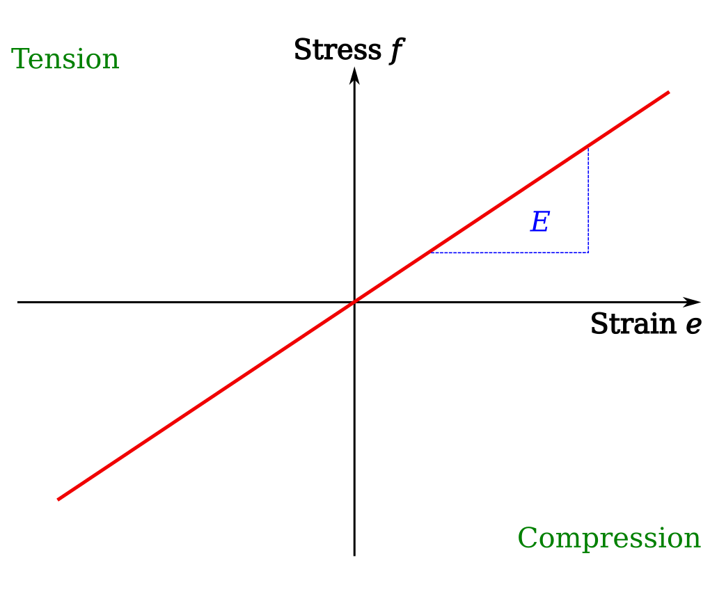

Materials
This page shows how Material objects are added to the Structure object, here given as mdl. A variety of linear and non-linear material models exist, either as simple to use templates for typical materials, or detailed models taking many parameters. Note: the material classes are not yet completely implemented for all of the finite element solvers.
Adding materials
Material classes are first imported from module compas_fea.structure.material and then added as objects to the dictionary .materials of the Structure object, with name as its string key and by using the method .add_material() (or .add_materials() for a list of Material objects). Below, a simple elastic and isotropic material is added as an example, requiring the Young’s modulus E [in units of Pa], Poisson’s ratio v and density p [kg per cubic metre].
from compas_fea.structure import ElasticIsotropic
mdl.add_material(ElasticIsotropic(name='mat_elastic', E=10*10**9, v=0.3, p=1500))
Accessing and editing materials
Data are stored and accessed through the attributes of the Material object and its string key. Data on any Material object can be changed whenever needed.
>>> mdl.materials['mat_elastic'].E
{'E': 10000000000}
>>> mdl.materials['mat_elastic'].v
{'v': 0.3}
>>> mdl.materials['mat_elastic'].p
1500
Materials
Classes exist for commonly used materials such as concrete, steel and timber to act as templates for quickly adding these frequently used material models for engineering. They will first assume typical design values for the material parameters, but these can still be changed by the user. Other classes require all material data to be provided explicitly and are used for creating detailed material models. The following section details the available material model classes.
Elastic
The simplest material model is the elastic, isotropic and homogeneous material called ElasticIsotropic. This takes the Young’s modulus E [Pa], Poisson’s ratio v and density p [kg per cubic metre]. Additionally, it can be stated if the material should allow tension or compression, given as boolean arguments.
from compas_fea.structure import ElasticIsotropic
mdl.add_material(ElasticIsotropic(name='mat_elastic', E=10*10**9, v=0.3, p=1500, tension=True, compression=True))
The standard elastic material model is shown below, where tension is taken as positive.
{kind=link}
To allow only compression, set tension=False.

To allow only tension, set compression=False.
{kind=link}
Elastic–plastic
The ElasticPlastic class can be used to make a general isotropic and homogeneous non-linear material object, with the same shape of stress–strain curve in both compression and tension. The elastic input data is the same as with the ElasticIsotropic class, given by Young’s modulus E [Pa], Poisson’s ratio v and density p [kg per cubic metre]. For the plastic description of the material, use lists of plastic stresses f [Pa] and plastic strains e [total strain minus yield strain]. The first value of f should be the stress at the end of the elastic region, i.e. the yield stress, and the first value of e should be zero, i.e. the beginning of plastic straining. Continue to give pairs of plastic stress and plastic strain to define the complete behaviour. To add the general elastic–plastic stress–strain data curve below as data to the ElasticIsotropic class, the input (with variables representing numbers) would look like:
from compas_fea.structure import ElasticPlastic
f = [fy, f1, f2, f3]
e = [0, e1 - ey, e2 - ey, e3 - ey]
mdl.add_material(ElasticPlastic(name='mat_plastic', E=E, v=v, p=p, f=f, e=e))
{kind=link}
Steel
The Steel class will create an object based on steel, and add it to the Structure named mdl. The string name for the material must be given, while the yield stress fy [MPa], Young’s modulus E [GPa], Poisson’s ratio v and density p [kg per cubic metre] will default to common values used in design if no user specific values are given. The type of linear material behaviour after first yield can be defined through the fracture stress and strain fu [Pa] and eu [%]. Note: that the yield stress is given in units of [MPa] and Young’s modulus in [GPa], but then stored, as with all materials, as [Pa].
from compas_fea.structure import Steel
mdl.add_material(Steel(name='mat_steel', fy=355, E=210, v=0.3, p=7850))
{kind=link}
from compas_fea.structure import Steel
mdl.add_material(Steel(name='mat_steel', fy=355, fu=500, E=210, eu=10))

Concrete
There are currently three material models for concrete, a Eurocode 2 model Concrete, a smeared crack model ConcreteSmearedCrack, and a damaged plasticity model ConcreteDamagedPlasticity. The key features of these three models are described below:
The easiest concrete material object to create is with the Concrete class, which requires mainly the characteristic (5%) 28 day cylinder strength in MPa (up to 90 MPa). Default values of the Poisson’s ratio
v=0.2and densityp=2400are taken unless specified otherwise. As per Eurocode 2 Part 1-1 (particularly Table 3.1), key material data is derived from knowing the characteristic cylinder strengthfck. The Concrete model includes: 1) the compressive stress–strain model of Eurocode 2 Part 1-1 Clause 3.1.5, 2) the mean Young’s modulus, tensile and compressive stresses from Eurocode 2 Part 1-1 Table 3.1, and 3) will assume a linear elastic response until the tensile cracking stress, followed by a drop to zero tensile stress at 0.1 % strain.
{kind=link}
from compas_fea.structure import Concrete
mdl.add_material(Concrete(name='mat_concrete', fck=90))
The ConcreteSmearedCrack class (based on the Abaqus smeared crack material) creates a general concrete material model object. The Young’s modulus
E[Pa], Poisson’s ratiovand densitypare all explicitly given, as no defaults are assumed. The compressive stress–strain data are given with plastic stressesfc[Pa] (positive) and plastic strainsecin exactly the same way as the ElasticPlastic model. The first value offcis the stress at the end of the elastic region defined by slopeE, paired with the first value ofecof zero. For the tensile stresses, tension stiffening usesftandet, whereftare not the absolute values of tensile stress, but the relative tensile stress from the point of cracking. So the first data pairs areftas 1 atetof 0, then dropping toftas 0 at another value ofet(0.001 recommended). Before cracking, the tensile stress–strain behaviour is linear, using the same Young’s modulusEas for compression. Finally, the failure ratiosfrare given, which are the ratio of the ultimate bi-axial to uni-axial compressive ultimate stress (default 1.16) and the ratio of uni-axial tensile to compressive stress at failure (default 0.0836), the latter will give a tensile failure stress of 35 * 0.0836 = 2.926 if the concrete maximum compressive stress is 35 MPa. To add the general concrete stress–strain data curve below as data to the ConcreteSmearedCrack class, the input (with variables representing numbers, and the cracking stress as 10% of peak stress f3) would look like:
{kind=link}
from compas_fea.structure import ConcreteSmearedCrack
fc = [fy, f1, f2, f3]
ec = [0, e1 - ey, e2 - ey, e3 - ey]
ft = [1, 0]
et = [0, etu]
fr = fr=[1.16, 0.10]
mdl.add_material(ConcreteSmearedCrack(name='mat_concrete', E, v, p, fc, ec, ft, et, fr))
The ConcreteDamagedPlasticity material model is used for concrete and other quasi-brittle materials (and is based here and quoted from the Abaqus damaged plasticity material). The class takes the Young’s modulus
E, Poisson’s ratiovand densitypas no defaults are assumed, as well as listsdamage,hardeningandstiffening. Fordamage, a list is given of: the dilation angle in degrees, flow potential eccentricity, the ratio of initial equibiaxial to uni-axial compressive yield stress, the ratio of the second stress invariant on the tensile meridian to that on the compressive meridian, and the viscosity parameter. For the inputhardening, a list is given of: the compressive yield stress, inelastic crushing strain, inelastic crushing strain rate, and temperature. Finally, forstiffening, a list of: remaining direct stress after cracking, direct cracking strain, direct cracking strain rate, and temperature.
Timber
Timber models are to be developed.